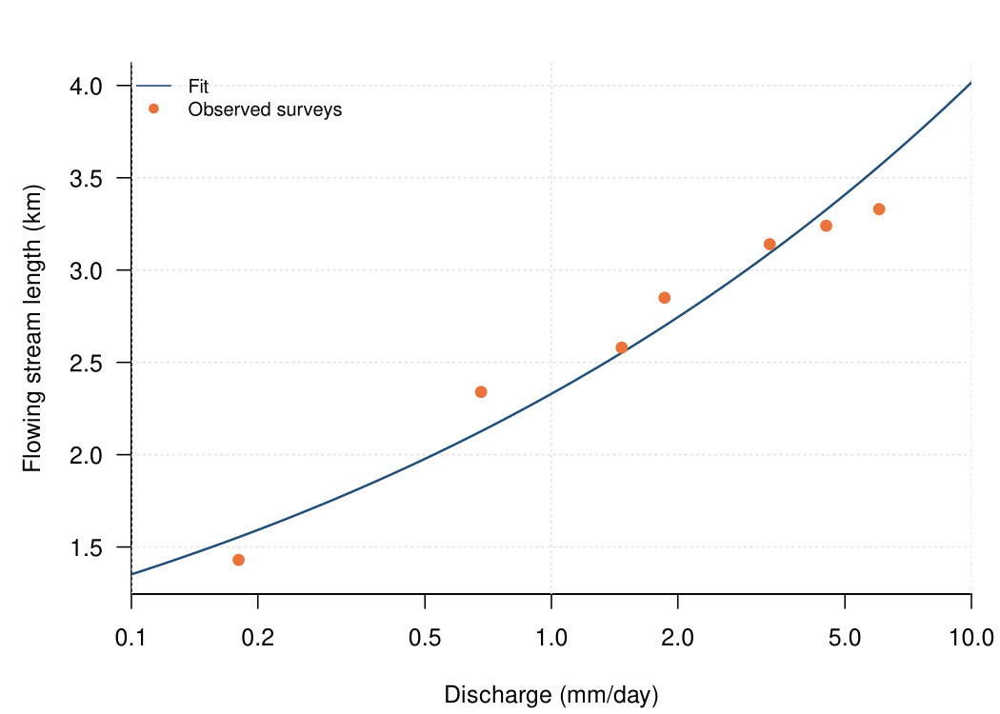
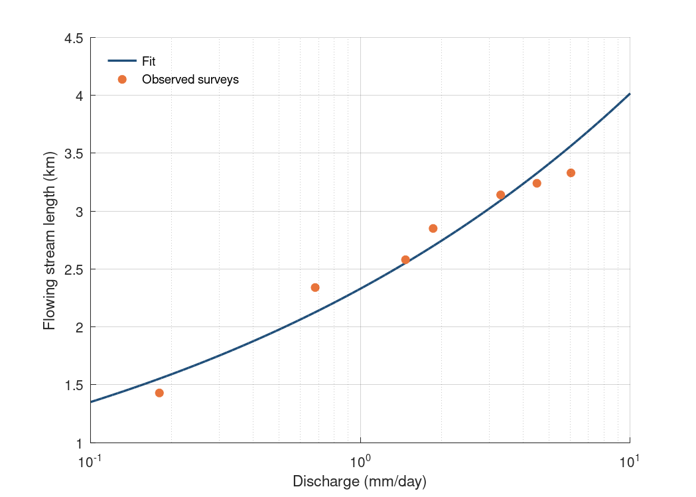

Chapter 4 · Streamflow, Runoff Generation, and Overland Flow
Stream length vs discharge (expansion and contraction of the network)
Surveyed stream length (points) and fitted relationship with discharge.
Source: Chapter 4 draft; data supplied by the chapter author (figs/fig12.csv)
Data: fig12.csv

Code: stream_length_discharge.py · image: figure_python.png
"""Stream length vs discharge (expansion and contraction of the network)
Chapter 4 draft; data supplied by the chapter author (figs/fig12.csv)
Run: python3 stream_length_discharge.py -> figure_python.png"""
import numpy as np
import pandas as pd
import matplotlib
matplotlib.use("Agg")
import matplotlib.pyplot as plt
a = pd.read_csv("fig12.csv")
fig, axes = plt.subplots(1, 1, figsize=(7, 5), squeeze=False)
axes = axes[:, 0]
ax = axes[0]
ax.plot(a[a["record_type"] == "fit"]["discharge_mm_per_d"], a[a["record_type"] == "fit"]["stream_length_fit_km"], color="#1f4e79", lw=1.6, ls="-", label="Fit")
ax.scatter(a[a["record_type"] == "observation"]["discharge_mm_per_d"], a[a["record_type"] == "observation"]["stream_length_obs_km"], s=30, color="#e8743b", label="Observed surveys", zorder=3)
ax.set_xscale("log")
ax.set_xlabel("Discharge (mm/day)")
ax.set_ylabel("Flowing stream length (km)")
ax.legend(frameon=False, loc="upper left", fontsize=8)
ax.grid(alpha=0.25)
for s in ("top", "right"): ax.spines[s].set_visible(False)
fig.tight_layout()
fig.savefig("figure_python.png", dpi=150)

Code: stream_length_discharge.R · image: figure_r.png

# Stream length vs discharge (expansion and contraction of the network)
# Chapter 4 draft; data supplied by the chapter author (figs/fig12.csv)
# Run: Rscript stream_length_discharge.R -> figure_r.png (base R, no packages needed)
a <- read.csv("fig12.csv", stringsAsFactors = FALSE)
png("figure_r.png", width = 1050, height = 750, res = 150)
par(mfrow = c(1, 1), mar = c(4.2, 4.6, 2.2, 1), las = 1)
plot(NA, xlim = range(c(a[a$record_type == "fit", ]$discharge_mm_per_d, a[a$record_type == "observation", ]$discharge_mm_per_d), na.rm = TRUE), ylim = range(c(a[a$record_type == "fit", ]$stream_length_fit_km, a[a$record_type == "observation", ]$stream_length_obs_km), na.rm = TRUE), log = "x", xlab = "Discharge (mm/day)", ylab = "Flowing stream length (km)", bty = "l", xaxs = "i")
grid(col = "grey88")
lines(a[a$record_type == "fit", ]$discharge_mm_per_d, a[a$record_type == "fit", ]$stream_length_fit_km, col = "#1f4e79", lwd = 1.6, lty = 1)
points(a[a$record_type == "observation", ]$discharge_mm_per_d, a[a$record_type == "observation", ]$stream_length_obs_km, col = "#e8743b", pch = 19, cex = 1.0)
legend("topleft", legend = c("Fit", "Observed surveys"), col = c("#1f4e79", "#e8743b"), lty = c(1, 0), pch = c(NA, 19), bty = "n", cex = 0.8)
invisible(dev.off())

Code: stream_length_discharge.m · image: figure_matlab.png

% Stream length vs discharge (expansion and contraction of the network)
% Chapter 4 draft; data supplied by the chapter author (figs/fig12.csv)
% Run: run stream_length_discharge.m -> figure_matlab.png (works in MATLAB and GNU Octave)
clear; close all;
fid = fopen('fig12.csv'); fgetl(fid);
C = textscan(fid, '%s%f%f%f%f%f%f', 'Delimiter', ',', 'EmptyValue', NaN); fclose(fid);
a.record_type = C{1};
a.survey_date_MMDD = C{2};
a.discharge_mm_per_d = C{3};
a.stream_length_obs_km = C{4};
a.stream_length_fit_km = C{5};
a.drainage_density = C{6};
a.exceedance_prob_pct = C{7};
a.record_type = strrep(a.record_type, '"', '');
figure('Visible', 'off', 'Position', [100 100 700 500], 'Color', 'w');
subplot(1, 1, 1); hold on;
w = strcmp(a.record_type, 'fit');
h0 = plot(a.discharge_mm_per_d(w), a.stream_length_fit_km(w), '-', 'Color', [0.122, 0.306, 0.475], 'LineWidth', 1.6);
w = strcmp(a.record_type, 'observation');
h1 = plot(a.discharge_mm_per_d(w), a.stream_length_obs_km(w), 'o', 'MarkerFaceColor', [0.91, 0.455, 0.231], 'MarkerEdgeColor', [0.91, 0.455, 0.231], 'MarkerSize', 6, 'LineStyle', 'none');
set(gca, 'XScale', 'log');
xlabel('Discharge (mm/day)');
ylabel('Flowing stream length (km)');
box off; grid on; set(gca, 'GridAlpha', 0.2, 'Layer', 'top');
legend([h0, h1], {'Fit', 'Observed surveys'}, 'Location', 'northwest'); legend boxoff;
print('-dpng', '-r150', 'figure_matlab.png');